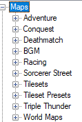

Creating Maps
The Maps node contains your maps but also BGM, Tilesets and Tileset Presets. You can use Presets to assign every tile with a terrain, bonuses and other so you don’t have to redo it every map.
SRW style maps are called Deathmatch maps.
As for how to pick which map will be used when starting a new game, simply change the Content/Map path.ini file